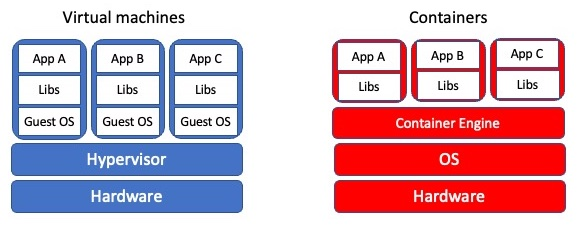

Introduction to Containers

When software is deployed, a set of libraries and configuration files is used in a runtime environment. Typically, we have several applications running in the runtime environment. Therefore, if a system update changes a lib to fix an issue, it might break other apps that use the same library. We all have experienced this at some point.
As a developer, you need to control the version of libraries within the runtime environment. Two technologies that can help you achieve this goal are Containers and Virtual Machines (VMs). Managing the environment of the apps becomes possible with the help of “virtualization.” The system resources, e.g., RAM, CPU, storage, networking, can be “virtually” delivered as multiple resources in the virtualization process.
Containers are executable units of software that encapsulate everything to run. In principle, one can run containers anywhere. Containers use the operating system (OS) level virtualization, isolating processes from the rest of the OS environment and controlling the allocation of (hardware) resources. The isolation is enabled via kernel namespaces and cgroups (as we will discuss them in detail at namespc-cgroup section), which have been in Linux for a long time.
Virtualization
Containers are an example of what’s called virtualization – having a second “virtual” computer running and accessible from a main or host computer. A VM typically contains a whole copy of an operating system in addition to its own file system and has to get booted up in the same way a computer would. A container is considered a lightweight version of a virtual machine; underneath, the container is using the Linux kernel and simply has some flavor of Linux + the file system inside.
The key differentiator between containers and VMs is that VMs virtualize an entire machine down to the hardware layers and containers only virtualize software layers above the operating system level.
Cons and Pros of Containers
Pros
Containers are lightweight software packages that contain all the dependencies.
Because of their lightweight, it is easy and very fast to iteratively modify them.
Cons
Since containers share the same underlying hardware system, it is possible that an exploit in one container could break out of the container and affect the shared hardware.
Cons and Pros of VMs
Pros
VMs are immune to any exploits or interference from other VMs on a shared host due run in isolation as because of a fully standalone system.
Since VMs are full-flegded OS, they are more dynamic and can be interactively developed. Once the basic hardware definition is specified for a VM, the VM can then be treated as a bare bones computer.
Cons
It is time consuming to build and regenerate VMs, because they encompass a full stack system. Any modifications to a VM snapshot can take significant time to regenerate and validate they behave as expected.
VMs can take up a lot of storage space. They can quickly grow to several Gigabytes in size. This can lead to disk space shortage issues on the VMs host machine.
One final term: if the container is an alternative file system layer that you can access and run from your computer, the container image is like a template for that container. The container image has all the needed information to start up a running copy of the container. A running container tends to be transient and can be started and shut down. The image is more long-lived, as a source file for the container. You could think of the container image like a cookie cutter – it can be used to create multiple copies of the same shape (or container) and is relatively unchanging, where cookies come and go. If you want a different type of container (cookie) you need a different image (cookie cutter).
Putting the Pieces Together
Think back to some of the challenges we described at the beginning. The many layers of scientific software installations make it hard to install and re-install scientific software – which ultimately, hinders reliability and reproducibility.
But now, think about what a container is - a self-contained, complete, separate computer file system. What if you put your scientific software tools into a container?
This solves several of our problems:
There is a clear record of what software and software dependencies were used, from bottom to top.
The container can be used on any computer that has Docker installed
It doesn’t matter whether the computer is Mac, Windows or Linux-based.
The container ensures that you can use the exact same software and environment on your computer and on other resources (like a large-scale computing cluster).
The rest of this workshop will show you how to download and run pre-existing containers on your own computer, and how to create and share your own containers.